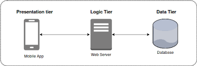

Multitier Architecture
- Multitier Architecture
- A software architecture that partitions an application into multiple layers or tiers, each with a specific role and responsibility.
- Common tiers include the presentation tier (client-side), business logic tier (server-side), and data tier (database).
- This approach promotes separation of concerns, making the application easier to develop, maintain, and scale.
